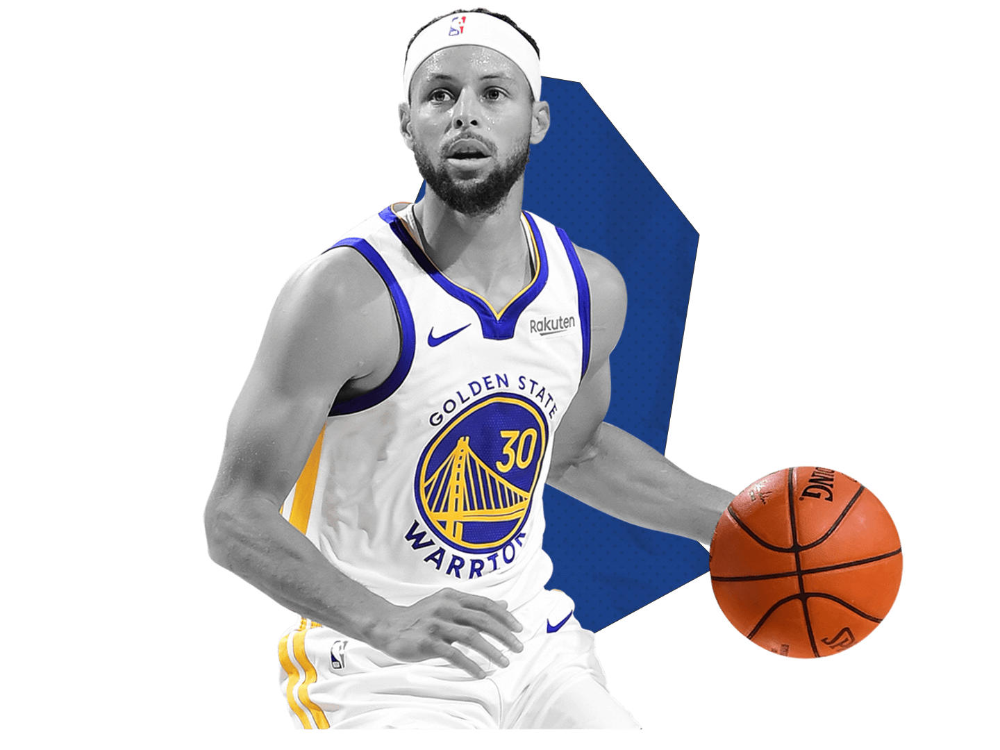

The point guard is the brain of the team - many see them as the extension of the coach. It is easy to understand why: they are the primary ball-handlers and they must possess high basketball IQ!
Some of the most famous point guards are:
Here are some skills necessary for you to become a good point guard!